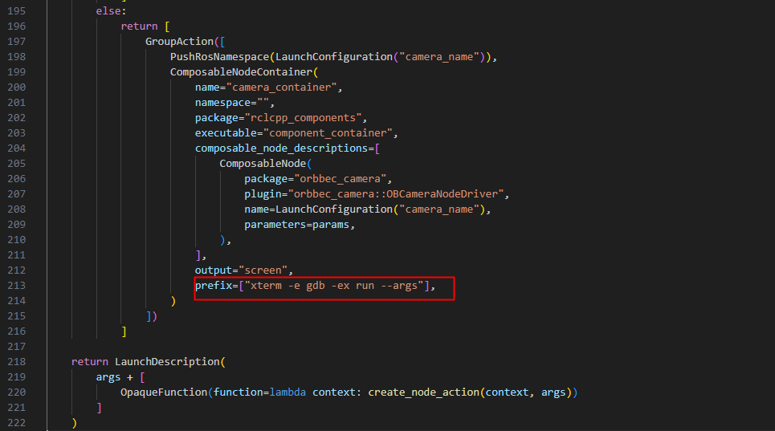

6.4. GDB debug
Debugging ROS 2 programs with GDB involves several steps:
6.4.1. Compile the program with debug information:
Use the colcon build command with the --cmake-args option to specify CMAKE_BUILD_TYPE as Debug or RelWithDebInfo to ensure that the compiled program includes debug information.
colcon build --cmake-args -DCMAKE_BUILD_TYPE=RelWithDebInfo</span></code></pre></div></div></pre>
If you only need to build a specific package, use the --packages-select option.
colcon build --packages-select [package_name] --cmake-args -DCMAKE_BUILD_TYPE=RelWithDebInfo
6.4.2. Start the node with GDB:
There are several ways to attach GDB when starting a node:
Directly start with GDB :
gdb
(gdb) exec-file [workspace]/build/lib/[ros_package_name]/[node_name]
(gdb) start
Start with gdbserver : In one terminal:
ros2 run --prefix 'gdbserver localhost:3000' [package_name] [executable_name]
Then in another terminal:
gdb
(gdb) target remote localhost:3000
6.4.3. Configure GDB in a launch file:
You can set launch-prefix in Python or XML launch files to start GDB.
Python launch file :
your_node = Node(
package='package',
executable='executable',
name='name',
prefix=['gdbserver localhost:3000'],
output='screen')
XML launch file :
<launch>
<node pkg="pkg" exec="node" name="name" launch-prefix="gdbserver localhost:3000">
</node>
</launch>
6.4.4. Use GDB for debugging:
Once GDB is started, you can set breakpoints, step through code, inspect variables, and view the call stack. Some common GDB commands include:
break filename.cpp:line_numberorbreak function_name: Set a breakpoint.run: Run the program.nextorn: Execute the next line of code.stepors: Step into a function and execute the next line of code.print variable_nameorp variable_name: Print the value of a variable.backtraceorbt: Display the call stack.continueorc: Continue the execution of the program.
6.4.5. Set up Linux to produce core files:
If the program crashes, you can produce core files by setting ulimit parameters, which helps in debugging the cause of the crash.
ulimit -c unlimited
echo 1 > /proc/sys/kernel/core_uses_pid</span></code></pre></div></div></pre>
This way, the produced core dumps will be named as core.PID.
6.4.6. Use VS Code for debugging:
If you prefer a graphical interface, you can debug with VS Code. You need to configure the launch.json file, set MIMode to gdb, and specify the program path and other debugging parameters.
6.4.7. Use the backward_ros package:
backward_ros is a ROS2 wrapper package that simplifies the GDB debugging process. You can use it by adding backward_ros to your package.xml and CMakeLists.txt files, then compile the program with the Debug or RelWithDebInfo options.
6.4.8. Use xterm terminal to open gdb debugging
Install xterm
sudo apt install xterm
Take gemini_330_series.launch.py as an example to use xterm terminal to open gdb
